Brief
In the Microsoft Design Challenge 22, I identified a pressing issue faced by Acid Attack Survivors (AAS) - the lack of accessible services and locations tailored to their needs. To tackle this problem, I conceptualized UNITED, a software application designed to empower AAS individuals in finding nearby AAS-friendly locations. With a duration of two weeks, my aim is to create a user-friendly solution that allows AAS individuals to easily locate essential services such as hospitals, rehabilitation centers, support groups, counseling services, and beauty salons from their current location. Through this project, I strive to enhance inclusivity, promote accessibility, and provide a supportive platform for the AAS community.
Problem Statement
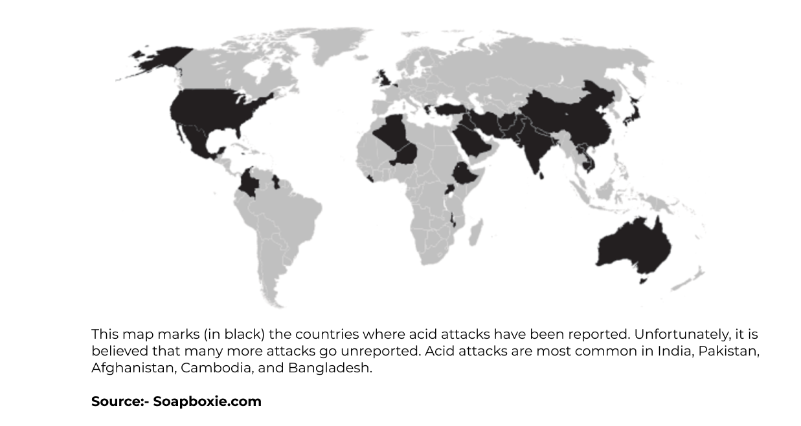
- Growing Numbers: The population of acid attack survivors is increasing daily, highlighting the urgency to address their specific needs and challenges.
- Inadequate Resources and Awareness: Acid attack survivors often face challenges in accessing relevant resources, information, and support networks, as there is a lack of awareness and dedicated initiatives for their specific needs.
- Lack of Respect and Understanding: Social stigmas and the pressure of being demeaned often result in acid attack survivors covering their faces, making it difficult for them to come forward and navigate society without fear of discrimination or mistreatment.
- Lack of Supportive Environment: Acid attack survivors encounter a dearth of understanding, respect, and acceptance from society, leading to feelings of isolation and exclusion.
- Difficulty in Accessing AAS-Friendly Places:
Acid attack survivors struggle to find nearby locations that are accommodating and sensitive to their unique needs, including healthcare facilities, support services, and public spaces.
Goals
- Accessibility: Create a user-friendly app to help acid attack survivors easily find nearby AAS-friendly places.
- Promote Acceptance: Create a supportive environment that encourages understanding and respect for acid attack survivors, reducing social stigmas.
- Empower Survivors: Provide tools and resources to empower survivors to regain confidence, mobility, and independence.
- Provide Information: Bridge the information gap by offering comprehensive details about AAS-friendly places, resources, and support networks.
- Cultivate Community:
Facilitate connections, shared experiences, and support among survivors, fostering a sense of belonging.
User Research
During the research phase, I extensively explored various online resources related to Acid Attack Survivors (AAS) to gain insights into their unique challenges. I delved into a range of platforms, including Twitter, Instagram threads, and news articles, to gather information and deepen my understanding of the problem. This comprehensive exploration served as a foundation for my primary research, allowing me to identify the specific needs and concerns of acid attack survivors. By leveraging these insights, I aim to develop a solution that truly addresses their requirements and empowers the AAS community.
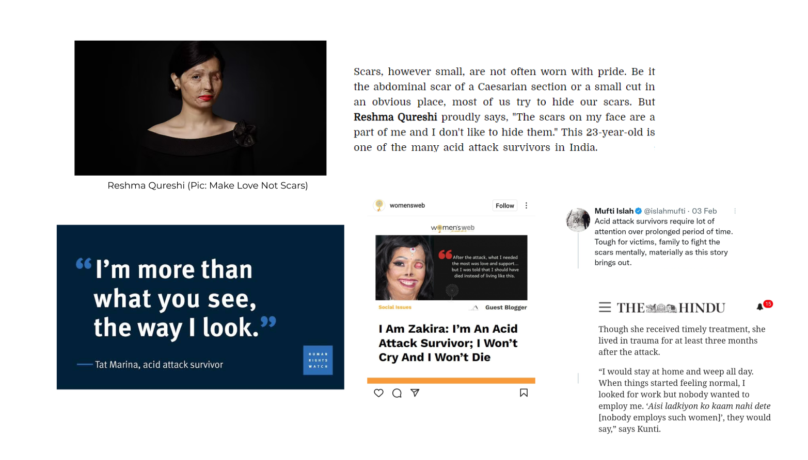
Interviews and Surveys
Through interviews and surveys, we gained valuable insights into the challenges faced by acid attack survivors, including limited access to AAS-friendly locations, societal stigmas, and lack of support services. These inputs helped us identify key pain points and shape the desired app features.
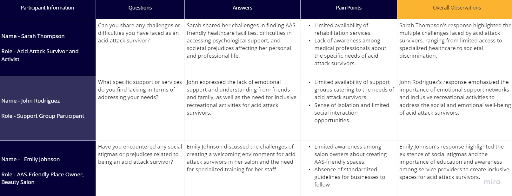
User Insights & App Features:
During the research phase, my focus was on understanding the needs and preferences of acid attack survivors to inform the development of the UNITED app.
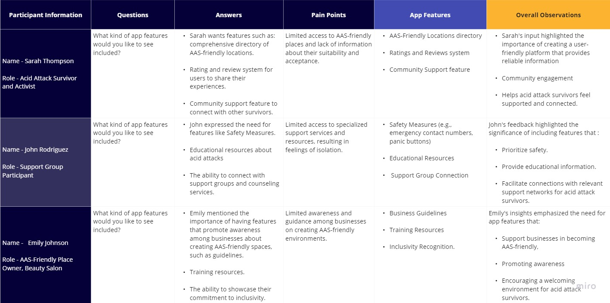
Competitive Analysis
In order to gain a better understanding of the competitive landscape and identify potential opportunities for differentiation, a competitive analysis was conducted for acid attack survivor support apps. The analysis focused on evaluating similar applications available in the market. Here are the key findings:
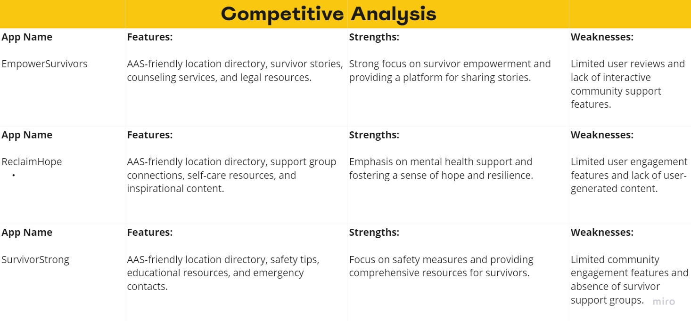
Ideation
Based on the findings from user research and competitive analysis, the ideation phase for the United Application has identified the following key features to be included:
- AAS-Friendly Location Directory:Users expressed the need for a comprehensive directory of AAS-friendly locations, allowing acid attack survivors to easily find and access supportive environments.
- Ratings and Reviews System:The inclusion of a ratings and reviews system will enable users to share their experiences and provide feedback on AAS-friendly locations, fostering a supportive network within the community.
- Safety Measures: Users emphasized the importance of safety features within the app, such as emergency contact numbers, panic buttons, and the ability to share location with trusted contacts, ensuring the well-being and security of acid attack survivors.
- Community Support: The app should include features that facilitate community support, such as discussion forums or chat groups, enabling acid attack survivors to connect, share advice, and seek emotional support from others with shared experiences.
- AAS-Friendly Location Directory:Users expressed the need for a comprehensive directory of AAS-friendly locations, allowing acid attack survivors to easily find and access supportive environments.
- Educational Resources: Providing educational resources about acid attacks, their consequences, prevention, and available support services is crucial to raise awareness and empower acid attack survivors and the wider community.
Reason behind "UNITED" Name and Logo Color Choice
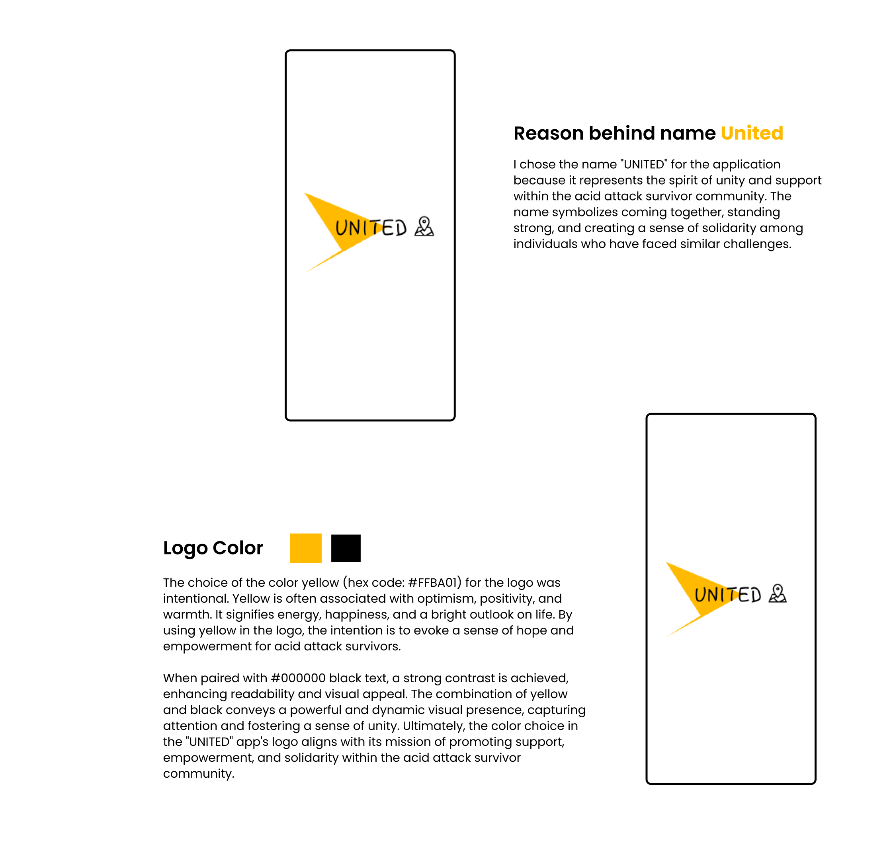
Storyboard
I have designed a storyboard for the United application, aiming to enhance understanding and communication. It visually represents the user experience, maps the user journey, and identifies areas for improvement.
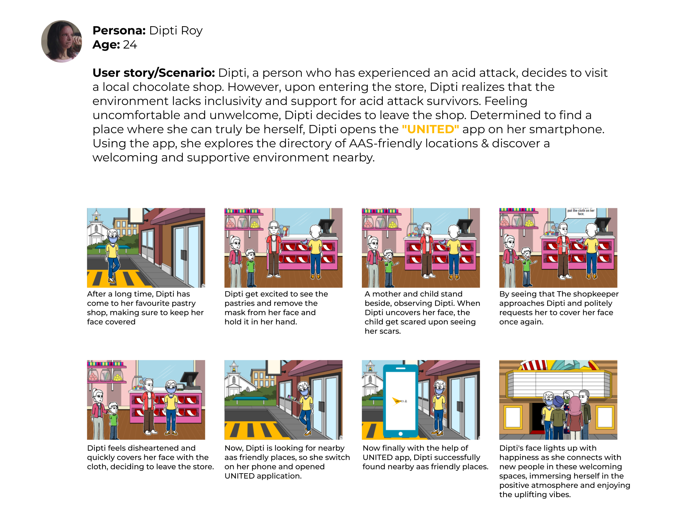
User Flow Design: Applying Research Findings for United App
Based on my user research, competitive analysis, and storyboarding, I have decided to proceed with creating an user flow. The findings from the research have provided valuable insights into my target audience, allowing me to design an user flow that caters specifically to their needs and preferences. This user-centric approach ensures that the United application meets the expectations of its users and provides them with a seamless and satisfying experience.
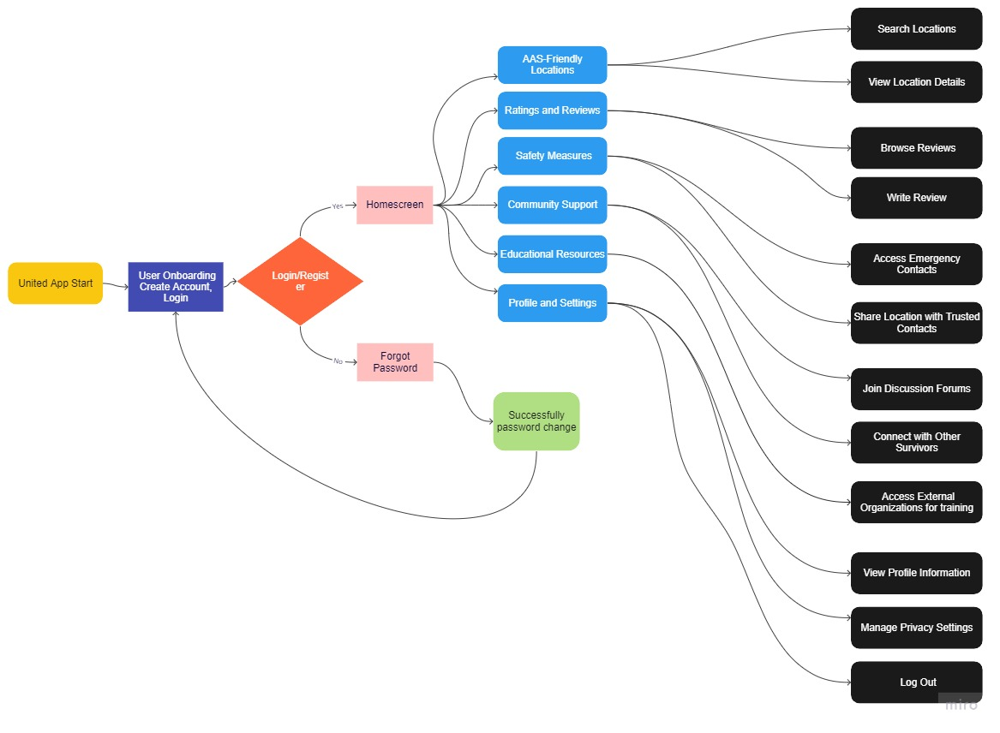
Wireframes
Due to time constraints, I was unable to design the entire United App. However, I have made progress by focusing on the user onboarding section, homepage section and developing wireframes for that specific area. These wireframes depict the planned structure and layout of the user-onboarding & location section, allowing for a better understanding of its features and functionality. Please note that the wireframes for other sections of the app are still a work in progress.
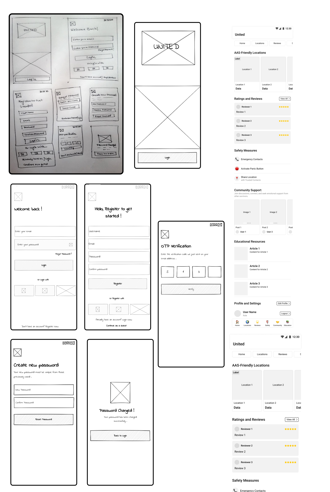
UI Screens
The UI screens for United App showcase the final visual design, incorporating colors, typography, and imagery for a user-friendly experience. They cover different aspects of the application and ensure consistency and clarity. These screens bridge the gap between wireframes and implementation. It is important to note that due to time constraints, the entire app has not been designed. However, significant progress has been made with the development of the user onboarding and homepage section, for which the corresponding UI screens have been listed.
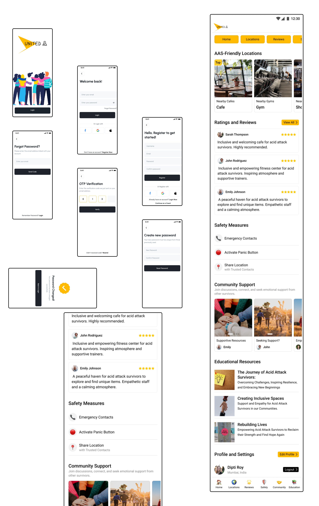
Prototype
Accessibility
By providing a text-based service, users can receive information about nearby acid attack survivor (AAS) friendly places without the need for a smartphone. Users can send a formatted text to a designated number, and in response, they will receive details such as locations, ratings, safety measures, and community support options. This solution bridges the digital divide, empowering a wider audience to access vital information and support services. It ensures that the app's benefits reach even those who don't have access to smartphones, promote inclusivity and serving the needs of the next billion users.
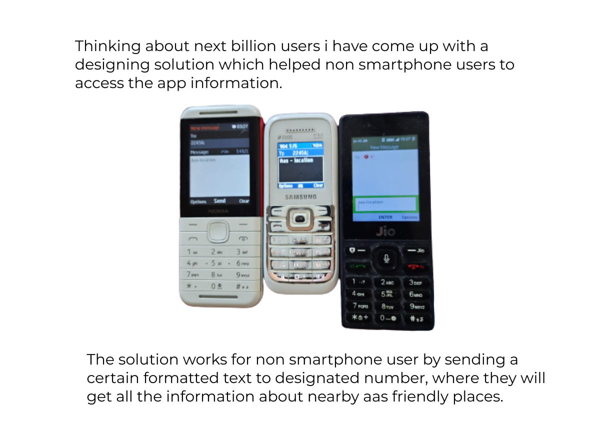
Future Implementations:
These future implementations will make the "UNITED" app more user-friendly, inclusive, and supportive for acid attack survivors.
- Complete App Design: Work on completing the design and development of the remaining sections of the app, including location details, ratings and reviews, safety measures, community support, educational resources, and profile settings. This will provide a comprehensive user experience across all app features.
- Real-Time Location Services: Integrate real-time location services to provide accurate and up-to-date information about AAS-friendly locations. This will ensure that users can find nearby supportive environments in real-time.
- Enhanced Ratings and Reviews: Enhance the ratings and reviews system by incorporating features such as helpful ratings, sorting options, and the ability to upload photos. This will provide users with valuable insights and facilitate a supportive community network.
- Accessibility Considerations: Ensure the app is fully accessible by incorporating features such as text-to-speech, screen reader compatibility, and high contrast mode. This will make the app usable for users with various accessibility needs.
- Usability Testing and Iteration: Conduct thorough usability testing with a diverse group of users to gather feedback and identify areas for improvement. Use the feedback to iterate on the app's design and functionality, ensuring a seamless and intuitive user experience.
- Localization and Internationalization: Consider localizing the app to reach a wider audience by translating content into different languages and adapting it to local cultural norms and preferences.
My participation in the Microsoft design competition enhanced my understanding of user-centered design principles and provided an opportunity to receive recognition for my work. I am grateful for the competition for providing a platform to showcase my solution and engage with the design community.